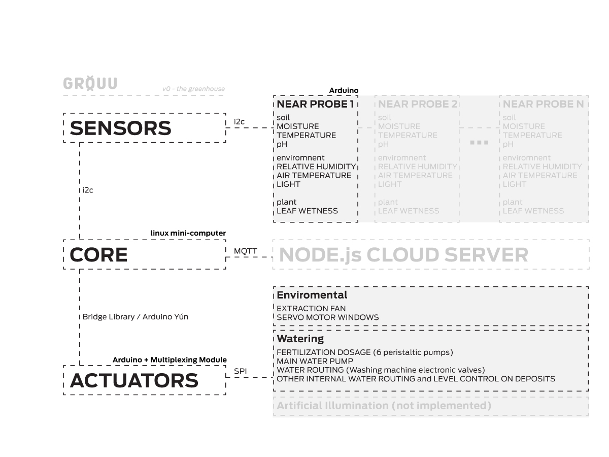

FAB ACADEMY 2017
FAB ACADEMY 2017
Week 1 - Sketch&Plan the Final Project
In 2013 I started working on a prototype called GROUU.
It was a part of my research and the first iteration of it meant as the devolopment of a new Open Agriculture Medium.
Since then, my teaching and professional activity didn't let the PhD run as fast as wanted.
Building this first iteration of GROUU made clear that:
- I needed a platform, not just a physical computing platform, specific or clearly documented adaptations for this purposes, but mostly an infrastructure, a Lab where all kind of Open Agriculture initiatives, tools and best practices are discussed, addressed and tested. A lab to be held next to all kinds of agriculture communities, urban or traditional. The final goal is to have Farm Labs - the project I’m founding with several Universities and Labs - to act has a repository and a network of labs aimed at exponentiating Open Agriculture/Farming;
- In a more tangible way, and about the system it self. I need to make it more Open, more modular, more adaptable to different contexts and different agricultural practices.
Nothing better than the Fab Academy process to work these possibilities and a new GROUU iteration.
Previous Work
The first GROUU iteration was mainly meant to be a collection of open resources (open hardware, software, design, etc) compiled in one object. A Practical way to access related work.
The automated greenhouse lab on wheels that derived from these, was built using LEVO structures - a personal project where I designed aluminum profiles, accessories for several purposes and modular uses. The greenhouse structure helped me testing a newly designed structural system.
The planters, were raised beds made out of spare large 10 mm acrylic sheets, which we carefully cutted with a circular saw and an hand router (Fab Lab Caldas da Rainha, doesn’t have a CNC table yet) and then folded with our own acrylic sheets arduino controlled bending table. The designs were very precise and complex in terms of angles. The water flow inside generated by the watering and excess drained waters also had to be acquainted.
Nevertheless, the real object of study was the system and the challenge to reconfigure a collection of possibilities, choose from the most accessible and define a clear, modular and scalable organization.
The final organisation was simple. We would design a near probe, containing the complete set of necessary sensors. This probe would be to be used along the plantation as many times as needed, in order to collect precise and personalised data from each are, set of plants, or planter. This strategy, combined with an also modular set of actuators, would enable precise actuation and data collection.
The rest is all about the main open concept and is a discussion outside of making, in between some research questions, addressing the power of benchmarking best practices, carefully and precisely documented, and supported by precision instruments in an open environment
